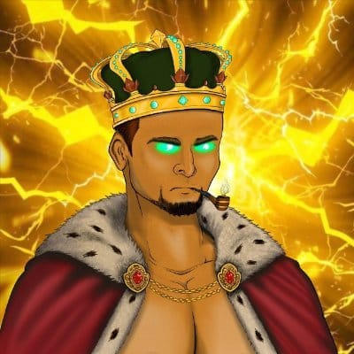
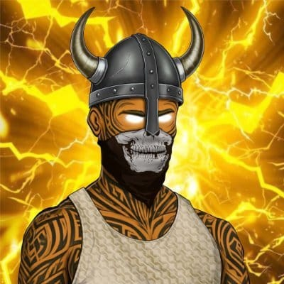
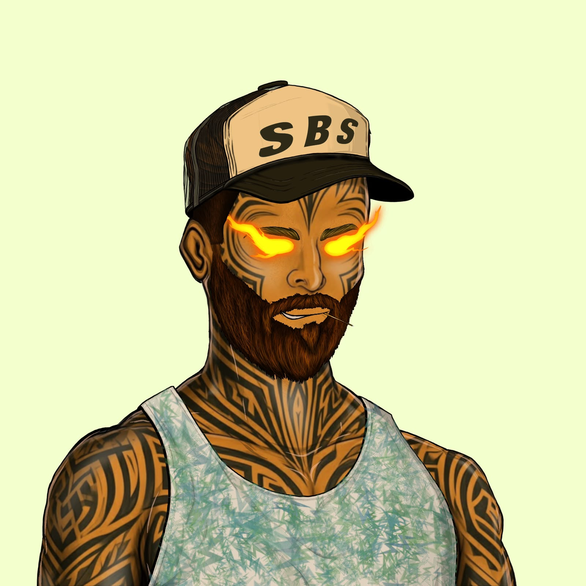
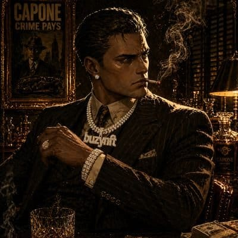
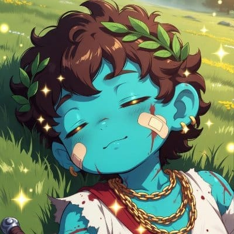
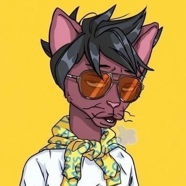

Identity
Every Bloke has a distinct personality, look and attitude.
Solana • 1,111 hand-drawn Blokes
Fortune Favors the Blokes.
A Society built around its own identity, style and utility.
Welcome to Sol Blokes Society
A hand-drawn collection of 1,111 unique Blokes on Solana, each with their own identity, style and utility.
Fortune favors the Blokes.

What is SBS?
SBS is more than a collection of digital characters. It’s a Society built for people who are willing to take chances, embrace the unexpected and create their own path.
Every Bloke has a distinct personality, look and attitude.
A place to meet, participate, compete and grow together.
A Society designed to evolve beyond the mint.
Built before the spotlight
The artwork and foundation of Sol Blokes Society have been developed quietly for nearly two years. During that time, we shaped the art, identity and foundation before opening the doors to the public.
We chose to open the Society when we felt the time was right to step out from behind the scenes and begin building publicly with the Blokes who join us.
Mint philosophy
It's about opening the doors, building the Society properly and letting it grow naturally toward its mint.
The Bloke mindset
We believe a strong NFT project should be more than something you mint and forget. It should give people a reason to return, participate, connect and feel like they’re part of the journey.
That’s why SBS is built with the community at its core — giving Blokes a place to meet, compete, take chances, share experiences and grow together.
There will be wins. There will be losses. There will be unexpected moments.
That’s part of the game.Because being a Bloke was never about playing it safe.
It’s about taking your shot, backing yourself and seeing where fortune takes you.
Sol Blokes Society
Fortune favors the Blokes.
BLOKE LORE
A Society awaits beyond what they know.
Open gates call to those searching for their place. A new chapter awaits the Blokes who will shape what comes next.
When the time comes, every Bloke will find their place.
The Society awaits its Blokes.

A closer look at the characters of the Society.

Unstoppable innovator who turns raw energy into ideas and ideas into action.

Unflinching security specialist who treats every assignment like it actually matters.

Smooth-talking hustler who can make even a questionable idea sound worth considering.

Builder with a sharp vision, prepared to cook flowers!
Calm and capable fixer who cleans up difficult situations without ever breaking a sweat.

Streetwise local who spends his free time chasing new spots and new experiences.

Meticulous chef who studies recipes like a scientist before putting them on the plate.

Adventurous outdoorsman who prefers rough trails and open skies to crowded places.

Dedicated archivist who believes the past is best studied in full armor.

Unpredictable daredevil who somehow makes dangerous choices look completely casual.

Confident showman who never walks into a room without making an impression.

Calm and reflective historian who burns with passion when discussing ancient philosophy.
Commanding King who knows how to lead without needing to prove his authority.

The Cyborg stands ready, bringing a fusion of machine precision and Bloke attitude to the Society.

SBS Army stands ready, protecting the Society and carrying the Bloke spirit with pride.
Society Roadmap
From the artwork and identity to the foundation behind the project, every element has been shaped with the long-term vision of SBS in mind.
After nearly 2 years of development, the Society is now open.
This roadmap represents the direction we’re taking as we build the Society together. Some elements may evolve as the community grows, but the purpose will remain the same.
Build a Society that grows with its Blokes.
The foundation of SBS.
The first chapter is about building the foundation.
The Blokes arrive on Solana.
The mint platform will be selected based on community feedback and what works best for the Society.
There will be no presale.
The mint is not the finish line. It’s where the next chapter begins.
Once the collection is minted out, the foundation goes to work.
The mint funds will be strategically put to work across the SBS ecosystem powering new experiences, revenue-generating initiatives and opportunities designed to create lasting value for our holders.
The goal isn't simply to spend the funds. It's to put them to work through a growing range of tools and experiences.
Stake your Blokes to access holder rewards and benefit from the Society’s revenue-sharing model.
Complete missions and earn rewards.
Community-wide raffles with bigger prize opportunities.
Interactive challenges with rewards along the way.
Exclusive rewards and surprises for the Society.
Scratch, reveal and discover community rewards.
Spin for chances to unlock different rewards.
New ways to put Society funds to work and generate value.
The goal isn't simply to build more. It's to build better and build with purpose.
When the Society grows, the Blokes benefit.
SBS is built around two distinct ways to return generated revenue to our community.
Staking will launch immediately after mint-out.
75% of the revenue generated from secondary-market royalties will be distributed directly to stakers through the SBS staking system.
Special trait tiers will also receive reward multipliers, such as 1.5× or 2×.
The complete staking structure and tiers will be revealed when staking goes live.
Revenue generated through the reinvestment of the mint fund will be returned to the community.
75% of the revenue generated from these reinvested funds will be airdropped to SBS stakers.
The first Society airdrop will begin after the first month of revenue generation.
The specific distribution mechanism will be announced before the respective revenue-sharing program begins.
Two Revenue Streams. Two Rewards.
75%Secondary Sales → Royalty Revenue → 75% → Stakers
Mint Fund → Reinvestment → Revenue → 75% → Stakers
The Society grows.
The Blokes benefit.
SBS doesn't stop at the mint.
Our long-term vision is to build something that extends beyond the collection itself.
We won't force ideas simply to fill a roadmap.
The Society will evolve with its Blokes.
The Vision
And that's intentional.
The future of SBS will be shaped by the Blokes who build it with us.
Our goal is simple:
Grow the community. Keep the Blokes happy. Build something we're proud of. And see where the Society takes us.The Team
A dedicated team working behind the scenes to shape, support and grow Sol Blokes Society.

Founder
Shaping the vision, direction and identity of Sol Blokes Society.

Artist & Community Manager
Bringing the Blokes to life visually while helping build a strong and welcoming community around the Society.

Operations & Community Manager
Handling day-to-day operations and helping keep the Society organized, coordinated and moving forward.

Moderator
A highly active presence in the Society, engaging with members, keeping conversations flowing and helping the community stay connected.

Moderator
Focused on growing and supporting the Society’s presence on X while keeping the community active and engaged.

Moderator
Supporting the community, engaging with members and hosting X Spaces to bring the Blokes together and keep the conversation going.
FAQ
Sol Blokes Society is a hand-drawn collection of 1,111 unique Blokes on Solana, each with their own identity, style and utility.
Built around one simple belief:
Fortune Favors the Blokes.
The mint date has not been finalized yet.
It will be officially announced by the SBS team through the official Society channels once confirmed.
The mint price has not been finalized yet.
The official price will be announced through the Society's official channels once confirmed.
The mint platform has not been finalized yet.
The platform will be selected based on community feedback and what works best for the Society.
The official mint link and complete instructions will only be shared through official SBS channels.
There will be no presale.
Owning a Bloke means being part of the Society.
Holders can take part in community experiences, events, rewards and future opportunities built around SBS.
The Society is designed to grow alongside its Blokes.
SBS is built to evolve beyond the mint.
The Society plans to introduce experiences and features designed to keep holders involved, including staking, rewards, community events, missions, airdrops, revenue sharing and other opportunities as the project evolves.
Specific features may develop over time as the Society grows.
Chosen Bloke is one of the most limited roles in the Society, reserved for members who consistently show up, contribute and stand behind what we’re creating.
Chosen Blokes receive 1x FREE MINT along with exclusive opportunities as the Society evolves, including private giveaways, earnable tasks, play-to-earn experiences and special perks.
It’s not a title to collect. It’s a position to maintain. Extended inactivity may result in the role being released to another Bloke.
SBS has two planned revenue streams for stakers.
75% of reinvested mint-fund revenue is allocated to SBS stakers.
75% of secondary royalties is allocated to SBS stakers.
The remaining revenue is used according to the Society's plans and operations.
You can join the official Sol Blokes Society through:
Discord:
https://discord.gg/9h4k6H2Wy2
X:
https://x.com/solblokesociety
Only trust links shared through official SBS channels.